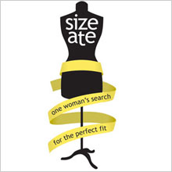
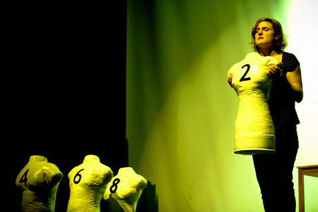

past performanceSize Ate |
Written and performed by Margaux Laskey synopsis:A poignant and powerful yet "pee-in-your-pants funny"one-woman show, SIZE ATE chronicles Margaux Laskey's harrowing and hilarious struggles with body and food issues, and her journey towards self-acceptance at any size. Not just for women or "eating disordered" individuals, SIZE ATE explores the universal themes of obsession, addiction, redemption and recovery through humor, drama, song and imagery. Winner of the 2006 New York Innovative Theatre Award for Outstanding Solo Performance, SIZE ATE returns to the NYC stage at the Wild Project for a limited engagement. This version of the show will include new material developed to reflect the changes in Laskey's relationship with her body and eating was well as her experience touring the show to colleges since the NYC premiere in 2005. |
showtimes:
Running time is 50 minutes with a 1/2 hour post-show discussion with special guests. For more information and view clips of the show at: www.sizeate.com |
|  | ||
upcoming performances |
|||
 |
|||
| EVQ Film Festival 2018 August 20-25 |
|||
performance archives |
|||
| 2018 | 2017 | 2016 | 2015 |
| 2014 | 2013 | 2012 | 2011 |
| 2010 | 2009 | 2008 | 2007 |